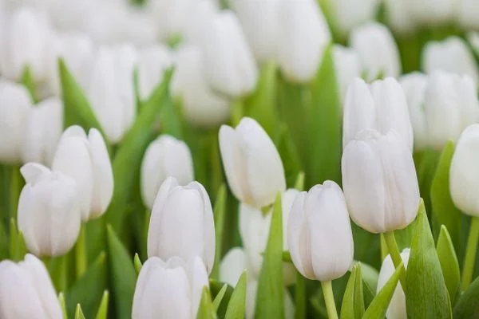
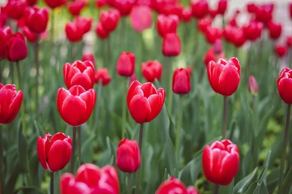
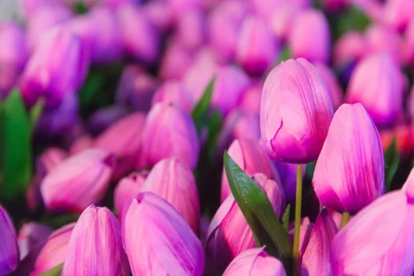

About
ความหมายของดอกไม้ทิวลิป
ดอกทิวลิปเป็นดอกไม้เมืองหนาวที่สวยงามและได้รับความนิยมในช่วงฤดูใบไม้ผลิ
เพราะเป็นช่วงที่ดอกทิวลิปบานสะพรั่งสวยรองจากดอกกุหลาบและคาร์เนชั่นเลยทีเดียว ในบันทึกเก่าแก่กล่าวว่า
ทิวลิปถือกำเนิดขึ้นมากว่า 1,000 ปีมาแล้ว อยู่ในโซนยุโรปกลาง และถือเป็นสัญลักษณ์ต่าง ๆ
ในโลกไม่ว่าจะเป็นประเทศฮอลแลนด์ สัญลักษณ์ของกษัตริย์ชาวตุรกี
และมีรูปร่างที่คล้ายกับเครื่องหัวของชาวเปอร์เซียอีกด้วย
ทิวลิปถือเป็นสัญลักษณ์ของความรักที่อุดมสมบูรณ์ โรแมนติก หลงใหล
เพื่อบอกถึงความรู้สึกที่มีต่ออีกฝ่าย
เพื่อให้เขาได้รับรู้ การแสงความจริงใจและขอโทษ และเป็นพูดถึงการเริ่มต้นสิ่งใหม่ ๆ
หรือรวมไปถึงวันครบรอบอีกด้วย
ดอกทิวลิปก็มีประโยชน์
- ใช้เป็นไม้ประดับตกแต่งในบ้านและจัดสถานที่ต่าง ๆ
รวมถึงใช้เป็นดอกไม้ที่ถือในพิธีแต่งงานอีกด้วย
- ปลูกเป็นพืชเศรษฐกิจ เพื่อจำหน่าย หรือปลูกเป็นสวนหรือฟาร์มสำหรับรองรับนักท่องเที่ยว
- เป็นอาหารให้นกหรือแมลงต่าง ๆ
ความหมายของดอกทิวลิปแต่ละสี
ดอกทิวลิปสีขาว 🤍 สื่อถึงความหมายที่บริสุทธิ์ จริงใจ
สามารถเสียสละทุกสิ่งทุกอย่างได้ เพื่อคนที่รัก โดยที่ไม่คาดหวังถึงผลประโยชน์หรือสิ่งตอบแทน
ดอกทิวลิปสีแดง ❤️ ที่มีความฉูดฉาด สื่อถึงรักที่ไม่ปิดบัง
รักที่เปิดเผยและจริงใจ
มีความหลงใหลอยู่ในความหมายนั้นลึก ๆ เหมาะกับผู้ที่แสดงออกถึงความรู้สึกอย่างตรงไปตรงมา
หรือเป็นของขวัญเนื่องในโอกาสพิเศษ

ดอกทิวลิปสีชมพู 💟เปรียบกับความรักที่สมบูรณ์แบบ มั่นใจ
ไม่มีการหลอกลวง หรือปิดบัง เป็นความรักที่สดชื่นสดใส สามารถส่งมองให้คนที่เรารักได้โดยไม่จำเป็นต้องบังคับ
ดอกทิวลิปสีเหลือง 💛 เป็นอีกสีที่ได้รับความนิยมเช่นกัน
สีเหลือง มีความหมายถึงความสุข ความอุดมสมบูรณ์ การเคารพหรือความภักดี มิตรภาพและความชัดเจนต่อความสัมพันธ์
แต่ทว่าอีกนัยหนึ่ง ดอกทิวลิปสีเหลือง ใช้เป็นตัวแทนของรักที่ไม่สมหวังหรือโดนปฏิเสธจากคนที่รักก็ได้
ดอกทิวลิปสีส้ม 🧡 สื่อถึงความสุขที่อบอุ่น งดงาม
มีความหมายเกี่ยวกับแรงบันดาลใจที่ดี เป็นการส่งมอบพลังบวกให้แก่ผู้ที่ขาดกำลังใจที่ดีนั่นเอง
ดอกทิวลิปสีม่วง 💜 กล่าวถึงความรักที่ซื่อสัตย์และมั่นคง
ไม่ว่าความรักจะเป็นอย่างไร ใจก็ยังจะมั่นคงต่อคุณเสมอ
